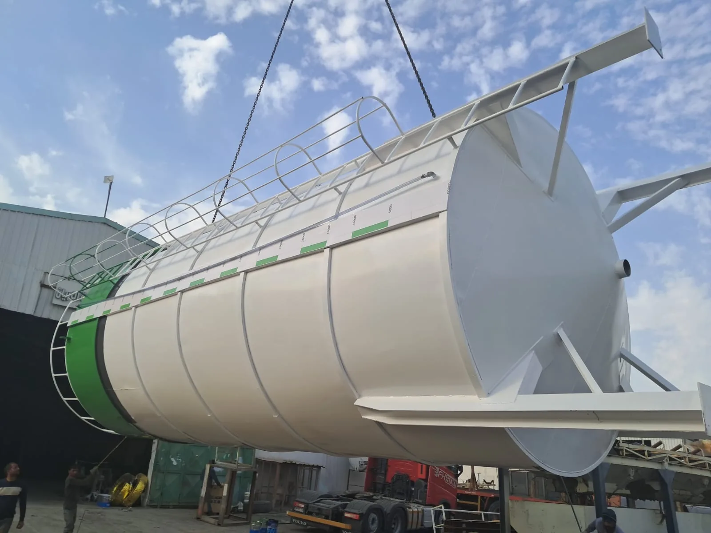
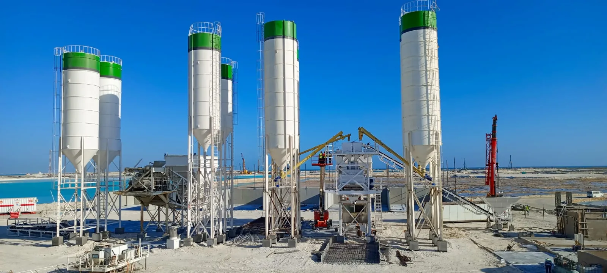
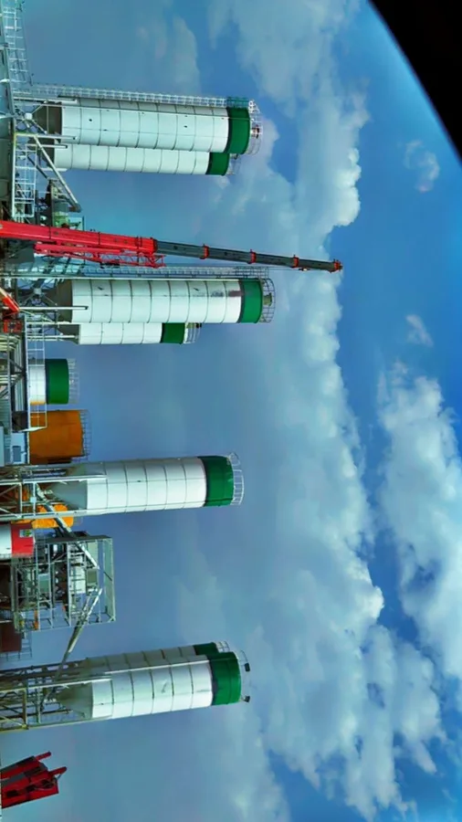
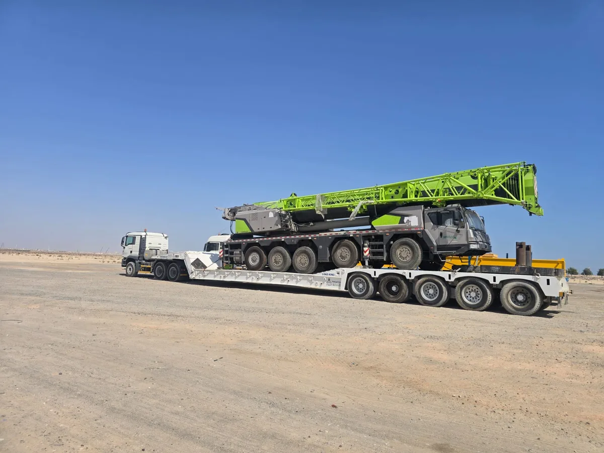
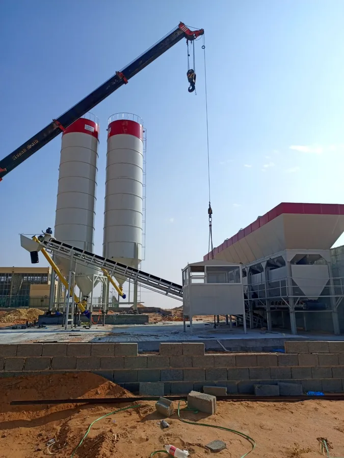
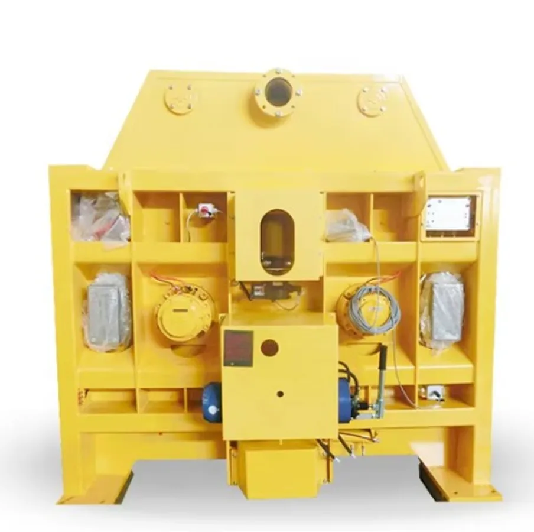
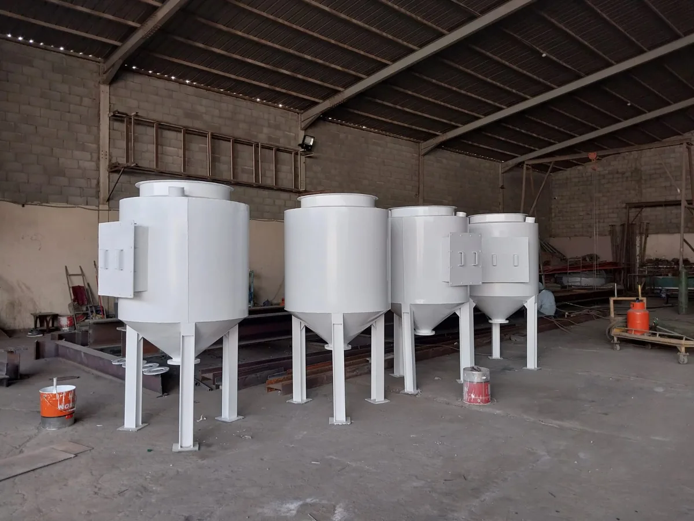

منتجات الصوامع
صوامع صهاريج
ثماني عائلات قياسية لصهاريج الصوامع للتخزين الصناعي الجاف والسائل — كل منها متوافقة مع المنتج وطريقة التعبئة وتخطيط الموقع.
عائلات الصوامع
ثمانية أنواع قياسية في خط تصنيع واحد.
يبدأ تصميم الصومعة بالمنتج المخزن: حجم الجسيمات والتآكل والرطوبة ودرجة الحرارة وطريقة التفريغ تحدد الهيكل والقادوس والتركيبات.

صوامع فولاذية مثبتة
صوامع مبنية من ألواح فولاذية مدرفلة بوصلات رأسية وأفقية مثبتة بمسامير، تُسلَّم معبأة تُقام في الموقع بمعدات بسيطة.
الوظيفة: تخزين الإسمنت والجير والجبس والركام حيث تقرر سرعة الإقامة وقابلية النقل والكفاءة التكلفية التصميم.

صوامع الفولاذ المقاوم للصدأ
هياكل ملحومة بالكامل من الفولاذ المقاوم للصدأ بأسطح داخلية ملساء ومناهل فحص وتركيبات صحية تحافظ على نظافة المنتج وسهولة تفريغه.
الوظيفة: الطحين والسكر والمكونات الغذائية ومساحيق العمليات حيث تهيمن النظافة ومقاومة التآكل والتفريغ النظيف على المتطلبات.

صوامع الإسمنت
صوامع أسطوانية بقيعان قواديس حادة ووسائد هوائية وفنحات غبار وخلايا وزن للتحكم بالوزن — بمقاس يلائم الاستهلاك اليومي لمحطة الخلط.
الوظيفة: تخزين الإسمنت لمصانع الخلط الجاهز والبلوك، بتعبئة هوائية وسحب سريع دقيق في دورة الخلط.

صوامع الحبوب والبذور
صوامع عالية السعة بقيعان مسطحة أو قمعية مع تهوية وأرضيات هوائية ومراقبة حرارة للتخزين الآمن للمحصول.
الوظيفة: تخزين القمح والشعير والذرة والبذور في المزارع والموانئ ومطاحن الأعلاف — حماية الجودة عبر مواسم تخزين طويلة.

صوامع المساحيق والرماد المتطاير
صوامع ملحومة بتهوية مميعة وتجميع غبار ومجسات مستوى وتنفيس مصممة للمساحيق الدقيقة الكاشطة التي يجب أن تتدفق دون تكوين أقبية.
الوظيفة: تخزين الرماد الطائر ومسحوق السيليكا والغبار الصناعي بتعبئة وتفريغ هوائي موثوق للمصانع ومنتجي الخرسانة.

أنظمة الصوامع الخرسانية
مجموعات صوامع خرسانية هندسية للكميات الكبيرة جداً بمخاريط تفريغ فولاذية وممرات وصول وتعامل مركزي بالمنتجات بين الخلايا.
الوظيفة: محطات التخزين السائب والمطاحن حيث تتطلب السعات بالملايين من الأطنان بنية تحتية ثابتة بدل الفولاذ القابل للنقل.

صوامع الموانئ والمحطات
تخزين بمقياس محطات بمعدلات تعبئة وتفريغ سريعة وجسور وزن وربط نواقل ومصاعد وطلاء بحري للمواقع الساحلية.
الوظيفة: معالجة الحبوب والمواد السائبة للاستيراد والتصدير حيث تحدد معدلات تحميل السفن ومراقبة المخزون ووقت التدوير تصميم التخزين.

صوامع فولاذية مجلفنة سائبة
صوامع مجلفنة مضلعة بتجميع مثبت وأسقف محكمة ضد الطقس وأرضيات مهواة — الخيار القياسي للتخزين الموزّع في المزارع والمستودعات.
الوظيفة: تخزين الحبوب والأعلاف عبر مواقع صغيرة متعددة حيث تكون التكلفة المنخفضة ومقاومة التآكل والإقامة المحلية هي الأولوية.
ابدأ بالمنتج
أرسل المنتج المخزن واحصل على تصميم الصومعة.
شارك المنتج والسعة وطريقة التعبئة وقيود الموقع، ونترجم ظروف التشغيل إلى هيكل الهيكل وزاوية القادوس والتركيبات.
صور من مشاريع التصنيع والنقل لشركة العريان.